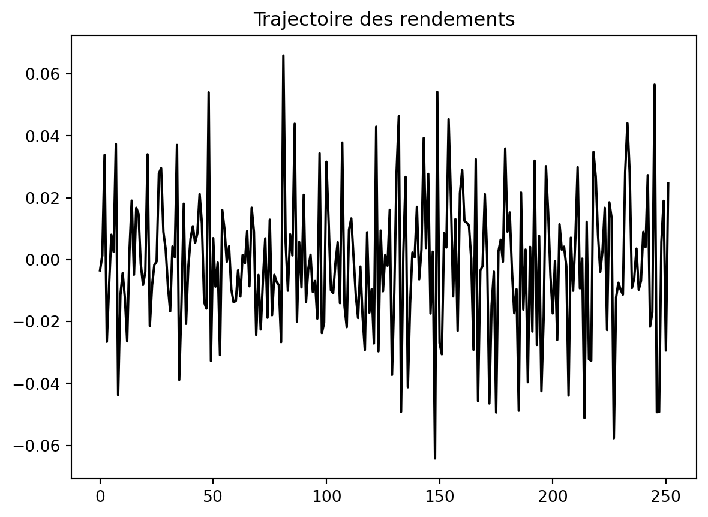
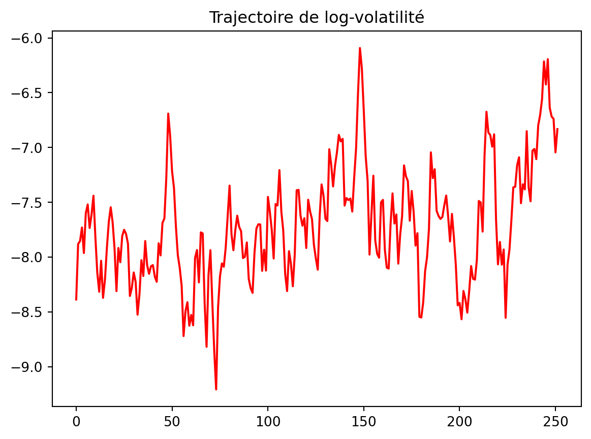
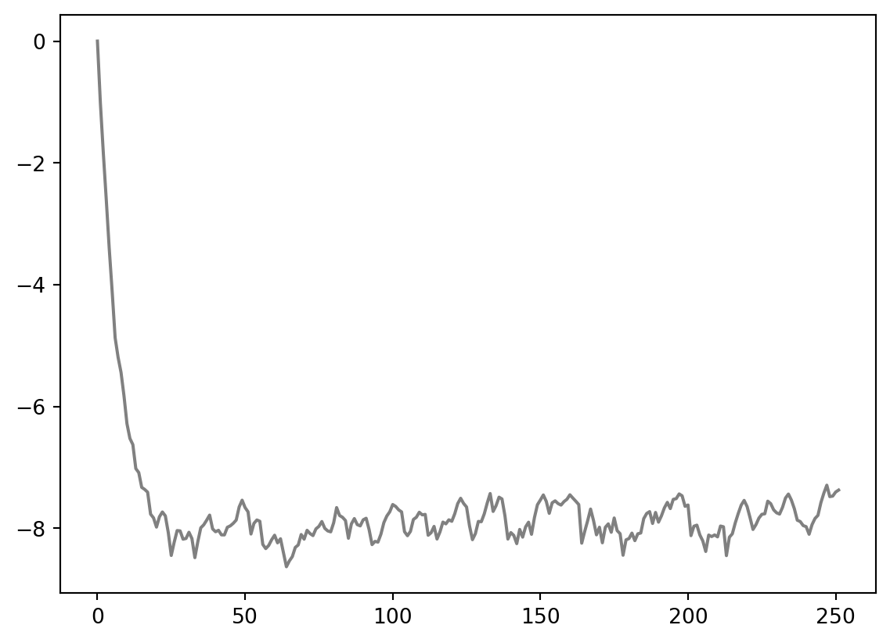
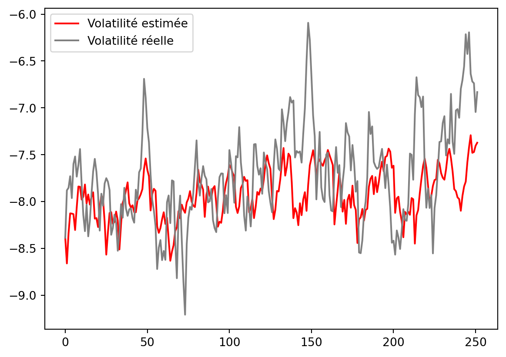
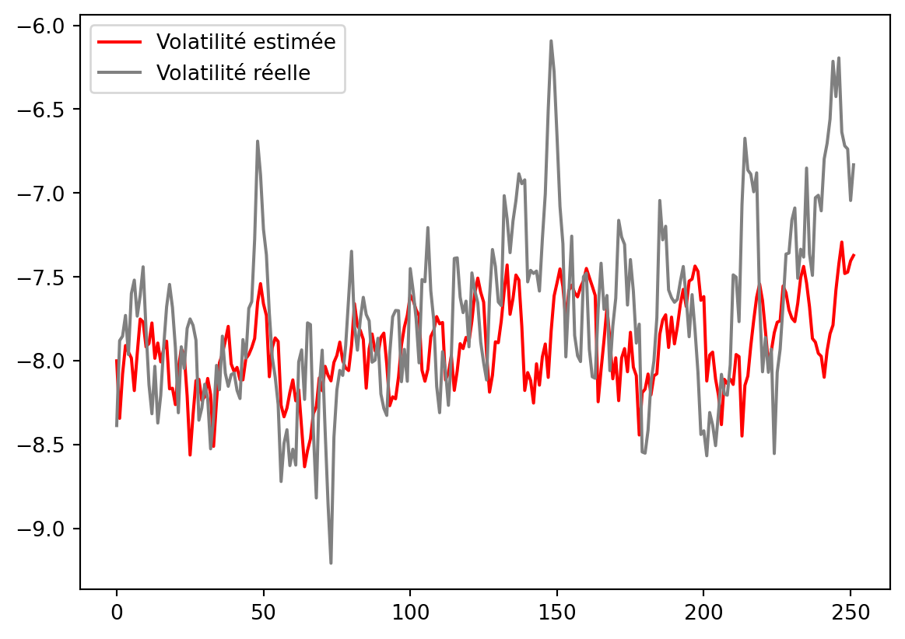

# Simulation d'un modèle à vol stochastique de Taylor
# r_t = exp(x_t/2)*eps_t (eps_t iid N(0,1))
# x_t = mu + phi * x_{t-1} + sigma_t * eta_t (eta_t iid N(0,1))
import numpy as np
import pandas as pd
import warnings
warnings.filterwarnings("ignore")
# Paramètres
n = 252
mu = -0.8
phi = 0.9
sigma_squared = 0.09
# Simulation
# np.random.seed(0)
# x = np.zeros(n)
# r = np.zeros(n)
# for t in range(0, n):
# if t == 0:
# x[t] = np.random.normal(loc= mu/(1-phi), scale=np.sqrt(sigma_squared/(1-phi**2))) # Densité de transition stationnaire de x_t
# else:
# x[t] = mu + phi * x[t-1] + np.sqrt(sigma_squared) * np.random.normal(loc=0, scale=1)
# r[t] = np.exp(x[t]/2) * np.random.normal(loc=0, scale=1)
data = pd.read_csv('true_sv_taylor.csv')
r = data['r']
x = data['x']Calibration du modèle à volatilité stochastique de Taylor : Filtre de Kalman
Calibration du modèle à volatilité stochastique de Taylor - Filtre de Kalman
Le modèle à volatilité stochastique de Taylor est un modèle de volatilité stochastique qui est utilisé pour modéliser la volatilité des actifs financiers. Le modèle est défini par l’équation suivante :
\[ \begin{aligned} r_t &= \exp(x_t/2) \cdot \varepsilon_t, \quad \varepsilon_t \sim \text{N}(0,1) \\ x_t &= \mu + \phi \cdot x_{t-1} + \sigma_t \cdot \eta_t \end{aligned} \]
où \(r_t\) est le rendement de l’actif financier à l’instant \(t\), \(x_t\) est la volatilité de l’actif financier à l’instant \(t\), \(\mu\) est la moyenne de la volatilité, \(\phi\) est le coefficient d’autorégression, \(\sigma_t\) est l’écart-type de la volatilité à l’instant \(t\), \(\eta_t\) est un bruit blanc gaussien, et \(\varepsilon_t\) est un bruit blanc gaussien.
Pour extraire la volatilité, nous utilisons le filtre de Kalman sur le logarithme des rendements au carré \(y_t = \log(r_t^2)\), afin de linéariser le modèle. Le modèle linéarisé est défini par l’équation suivante :
\[ y_t = x_t + \varepsilon_t \]
où \(y_t\) est le logarithme des rendements au carré à l’instant \(t\), \(x_t\) est la volatilité de l’actif financier à l’instant \(t\), et \(\varepsilon_t\) est un bruit blanc de loi log-\(\chi^2\).
De ce fait, nous pouvons utiliser le filtre de Kalman pour estimer la volatilité de l’actif financier en utilisant les rendements observés. En effet, le filtre de Kalman est un algorithme récursif qui permet d’estimer l’état caché d’un système dynamique à partir d’observations bruitées. Il s’applique à des modèles linéaires dont le bruit est gaussien. Dans notre cas, nous avons linéarisé le modèle pour qu’il soit compatible avec le filtre de Kalman. Cependant, le bruit n’est pas gaussien, mais log-\(\chi^2\). L’objectif de ce notebook est d’observer le comportement du filtre de Kalman où le bruit n’est pas gaussien.
Nous possédons déjà d’un fichier avec les rendements de l’actif financier et la vraie volatilité simulés avec les paramètres suivants \(\mu = -0.8\), \(\phi = 0.9\), \(\sigma = 0.09\). Nous allons donc utiliser ces données pour estimer la volatilité de l’actif financier en utilisant le filtre de Kalman. Néanmoins, le code est également fourni pour simuler les données si vous souhaitez tester le filtre de Kalman sur d’autres paramètres.
# Affichage des trajectoires
import matplotlib.pyplot as plt
plt.plot(r, color="black")
plt.title("Trajectoire des rendements")
plt.show()
plt.plot(x, color='red')
plt.title("Trajectoire de log-volatilité")
plt.show()

# Construction du modèle log-SV (modèle de Taylor)
# Pour appliquer le filtre de Kalman, il faut que les bruits soient centrés.
mu_r_squared = -1.27 # car log(eps**2) suit une log chi-deux
y = np.log(r**2) - mu_r_squaredFiltre de Kalman avec paramètres connus
Le filtre de Kalman fonctionne en deux étapes : prédiction et mise à jour. La prédiction consiste à prédire l’état caché du système à l’instant \(t\) en utilisant les observations jusqu’à l’instant \(t-1\). La mise à jour consiste à mettre à jour l’estimation de l’état caché en utilisant l’observation à l’instant \(t\). Posons :
- \(x_{\text{hat}[t]}\) l’estimation de la volatilité à l’instant \(t\),
- \(P[t]\) la matrice de covariance de l’estimation de la volatilité à l’instant \(t\),
- \(x_{\text{hat\_m}}\) la prédiction de la volatilité à l’instant \(t\),
- \(P_m\) la matrice de covariance de la prédiction de la volatilité à l’instant \(t\),
- \(y[t]\) l’observation à l’instant \(t\),
- \(K\) le gain de Kalman.
$$
Pour initialiser le filtre de Kalman, il est conseillé de connaitre la loi stationnaire de la volatilité. En effet, la volatilité suit une loi normale stationnaire de paramètre \(\mu/(1 - \phi)\) et \(\sigma^2/(1 - \phi^2)\). Par conséquent, nous pouvons initialiser le filtre de Kalman avec ces paramètres. En ce qui concerne la matrice de covariance de l’état initial, nous pouvons la fixer à une valeur élevée, par exemple \(10^2\).
Dans notre cas, nous allons tester deux initialisations différentes : une initialisation avec les paramètres stationnaires et une initialisation avec des paramètres aléatoires.
# Script de filtre de kalman pour estimer la volatilité à chaque instant t en supposant les paramètres connus
def kalman_filter(y, mu, phi, sigma_squared, n, init_x, init_P):
x_hat = np.zeros(n)
P = np.zeros(n)
# Initialisation
x_hat[0] = init_x
P[0] = init_P # Plus P est grand moins on fait confiance à l'apriori sur la valeur de la volatilité
for t in range(1, n):
# Prédiction
x_hat_m = mu + phi * x_hat[t-1]
P_m = phi**2 * P[t-1] + sigma_squared
y_m = x_hat_m
# Mise à jour
K = P_m / (P_m + (np.pi**2)/2)
P[t] = (1 - K) * P_m
x_hat[t] = x_hat_m + K * (y[t] - y_m)
return x_hat, P, K# Initialisation à 0 et 0.01
init_x = 0
init_P = 0.01
x_hat, P, K = kalman_filter(y, mu, phi, sigma_squared, n, init_x, init_P)
plt.plot(x_hat, color='grey', label='Volatilité estimée')
# Initialisation à x_0 et sigma_squared/(1-phi**2)
init_x = x[0]
init_P = sigma_squared/(1-phi**2)
x_hat, P, K = kalman_filter(y, mu, phi, sigma_squared, n, init_x, init_P)
plt.plot(x_hat, color='red', label='Volatilité estimée')
plt.plot(x, color='grey', label = 'Volatilité réelle')
plt.legend()
# Compute MSE, MAE, and RMSE
mse = np.mean((x - x_hat)**2)
mae = np.mean(np.abs(x - x_hat))
rmse = np.sqrt(mse)
print("MSE = ", mse)
print("MAE = ", mae)
print("RMSE = ", rmse)MSE = 0.2794557366826766
MAE = 0.4120099778966342
RMSE = 0.5286357315606622
# Initialisation à mu/(1-phi) et sigma_squared/(1-phi**2)
init_x = mu/(1-phi)
init_P = sigma_squared/(1-phi**2)
x_hat, P, K = kalman_filter(y, mu, phi, sigma_squared, n, init_x, init_P)
plt.plot(x_hat, color='red', label='Volatilité estimée')
plt.plot(x, color='grey', label = 'Volatilité réelle')
plt.legend()
# Compute MSE, MAE, RMSE
mse = np.mean((x - x_hat)**2)
mae = np.mean(np.abs(x - x_hat))
rmse = np.sqrt(mse)
print("MSE = ", mse)
print("MAE = ", mae)
print("RMSE = ", rmse)MSE = 0.27543214871007066
MAE = 0.4078063371140131
RMSE = 0.5248162999660649
Filtre de Kalman avec paramètres inconnus
Dans le cas où les paramètres du modèle sont inconnus, nous pouvons les estimer en utilisant le filtre de Kalman. En effet, nous pouvons utiliser l’algorithme EM pour estimer les paramètres du modèle. L’algorithme EM est un algorithme itératif qui permet d’estimer les paramètres d’un modèle en maximisant la vraisemblance des données observées. Dans notre cas, nous allons utiliser l’algorithme EM pour estimer les paramètres \(\mu\), \(\phi\) et \(\sigma\) du modèle.
import numpy as np
from scipy.optimize import minimize
# Define the log-likelihood function for the log-SV model with Kalman filter
def log_sv_kalman(params, y):
# Extract parameters
mu, phi, sigma_eta = params
# Number of observations
n = len(y)
# Initialize state and variance
x_t = mu # Initial state (log-volatility)
P_t = sigma_eta**2 / (1 - phi**2) # Initial variance (stationarity assumption)
# Log-likelihood accumulator
log_likelihood = 0
for t in range(n):
# Observation equation: y_t ~ x_t + nu_t
# Prediction step
y_t_pred = x_t
F_t = P_t + np.pi**2 / 2 # Variance of observation noise
# Update step
v_t = y[t] - y_t_pred # Prediction error
K_t = P_t / F_t # Kalman gain
x_t = x_t + K_t * v_t
P_t = (1 - K_t) * P_t + sigma_eta**2 # Update variance
# Update log-likelihood
log_likelihood += -0.5 * (np.log(2 * np.pi) + np.log(F_t) + (v_t**2 / F_t))
# State evolution
x_t = mu + phi * (x_t - mu) # State equation
return -log_likelihood # Negative log-likelihood for minimization
# Initial parameter guesses
initial_params = [-0.7, 0.8, np.sqrt(0.05)]
# Constrain phi between -1 and 1 and sigma_eta > 0
bounds = [(-np.inf, np.inf), (-1, 1), (1e-6, np.inf)]
# Optimize parameters using the log-likelihood function
result = minimize(log_sv_kalman, initial_params, args=(y,), bounds=bounds, method='L-BFGS-B')
# Extract estimated parameters
mu_est, phi_est, sigma_eta_est = result.x
# Print results
print("Estimated parameters:")
print(f"mu: {mu_est:.4f}")
print(f"phi: {phi_est:.4f}")
print(f"sigma_eta: {sigma_eta_est:.4f}")Estimated parameters:
mu: -0.8021
phi: 0.8001
sigma_eta: 1.2184